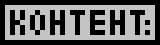
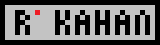
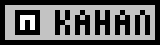

|    |
Алексей GeekNerdGames (р. 2003, Москва) - популярный блогер, известный, в первую очередь своими прекрасными видео по игре Minecraft, которые он снимает с 2014 года. Биография и карьераАлексей родился 25 июня 2003 года в Москве, в 3 года в его семье появился компьютер на Windows XP, который прочно вошёл в его жизнь на 10 лет, пока не сломался. После этого был ещё один компьютер, уже на Windows 10. В 2022 году у Алексея появился собственный игровой компьютер, что несказанно его обрадовало. В мае 2013 года Лёша узнал про игру Майнкрафт, которая перевернула его представление о компьютерных развлечениях. Летом того же года мама купила ему диск с ним в киоске и он стал фанатом кубача, как и многие другие дети. В ноябре того же года он создал себе канал на видеохостинге и стал выкладывать туда свои видео. Лёша снимал летсплеи и обзоры модов на Майнкрафт. В 2017 году он ушёл из Интернета и вернулся лишь в 2020, создав свой нынешний канал. В 2022 был создан канал на RuTube, а на Платформе - 28 июня 2024 года - в день открытия данного сайта. Приложение: Галерея мобов из Майнкрафта


|